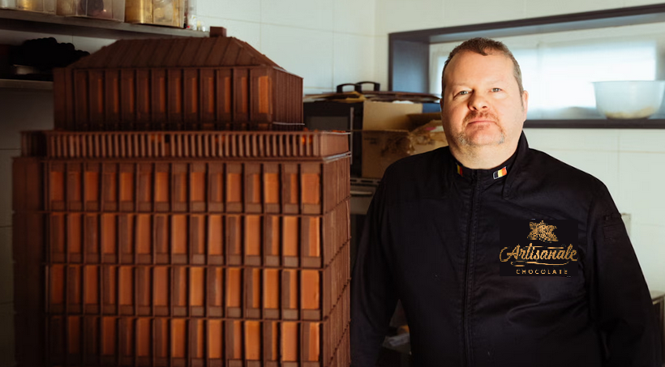
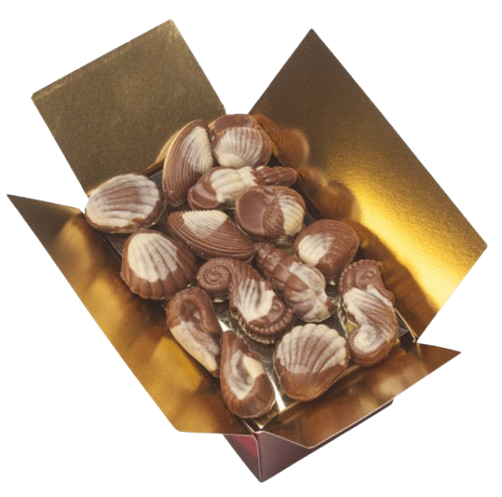
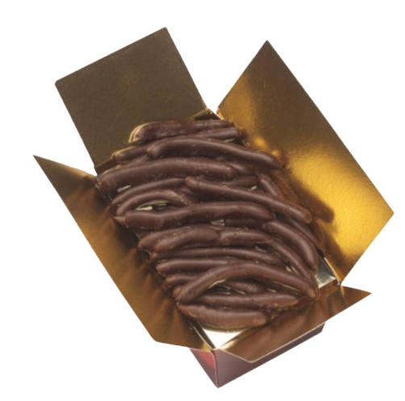
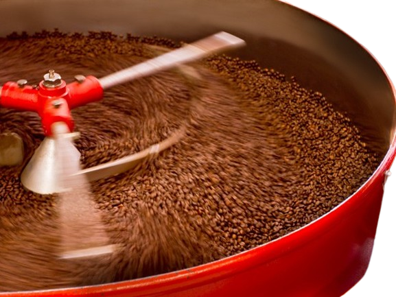
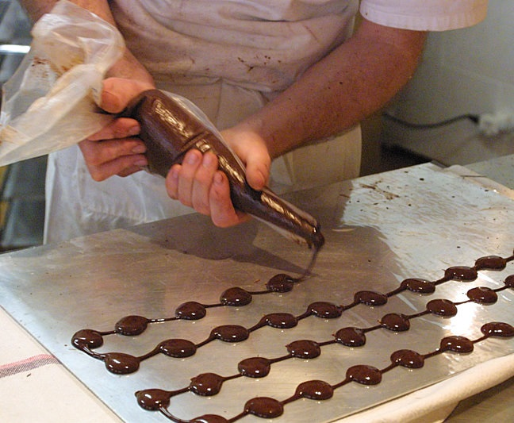

L’Art du Chocolat, l’Âme de la Belgique
Bienvenue dans un univers où le temps s’arrête et où les sens s’éveillent. Ici, le chocolat n'est pas qu'une gourmandise : c'est un héritage, une émotion sculptée par la main de l'homme. Héritiers d'une tradition séculaire, nous perpétuons l'excellence de la chocolaterie belge en mariant les fèves les plus rares à la pureté du beurre de cacao. Chaque praline, chaque ganache, est une pièce d'orfèvrerie conçue pour offrir un voyage sensoriel inoubliable. De l’intensité d’un noir profond à la caresse d’un lait onctueux, nos créations célèbrent l'équilibre parfait entre audace contemporaine et authenticité. Laissez-vous tenter par l'exceptionnel. Entrez dans notre atelier et découvrez le luxe d'un chocolat d'exception, fabriqué avec passion au cœur de la Belgique.

Nos produits phares
Truffes au chocolat au lait

Truffes au beurre au chocolat au lait belge recouvertes de copeaux de chocolat au lait Belge. Fait à la main par nos chocolatiers avec les meilleurs ingrédients. Vous ne pouvez pas vous arrêter à un seul.
Fruits de mer

Les crèmes belge au chocolat au lait et aux noisettes sont préparées à la main par nos chocolatiers. Un régal délicieux à donner ou à recevoir. Alors profitez-en jusqu'à la dernière bouchée, miam!
Orangettes

Orangettes au chocolat noir, ce praline belge est composé de morceaux de zeste d'orange, puis enrobé d'un riche chocolat noir belge. Vous ne pourrez pas vous arrêter à un seul.
Notre savoir-faire

Tout commence par le choix du cru. Nous sélectionnons rigoureusement des fèves de cacao issues des meilleures plantations mondiales. Pour mériter l'appellation de "chocolat belge" de prestige, nous utilisons exclusivement du beurre de cacao 100% pur, garantissant cette texture fondante et ce craquant incomparable qui font notre renommée. Le secret de nos arômes réside dans une "torréfaction lente", ajustée au degré près pour libérer toute la complexité du cacao. Les fèves sont ensuite broyées jusqu’à obtenir une finesse extrême (moins de 20 microns), une étape cruciale pour que le chocolat ne soit jamais granuleux en bouche, mais d'une douceur absolue. Notre avant dernière étape est le tempérage ce qui veux dire que: C’est ici que la magie opère. Nos maîtres chocolatiers travaillent la courbe de température du chocolat sur le marbre ou dans nos tempéreuses artisanales. Ce cycle précis de chauffe et de refroidissement permet au beurre de cacao de cristalliser parfaitement. Le résultat ? Une robe brillante, une cassure nette et une conservation optimale des saveurs. Vient ensuite la dernière étage qui est le "Fourrage et l'Enrobage à la Main" Nos ganaches sont cuisinées avec de la crème fraîche de nos fermes, des beurres de fruits ou des infusions de plantes. Chaque praline est ensuite enrobée d'une fine couche de chocolat, puis décorée à la main (la fameuse "signature").

